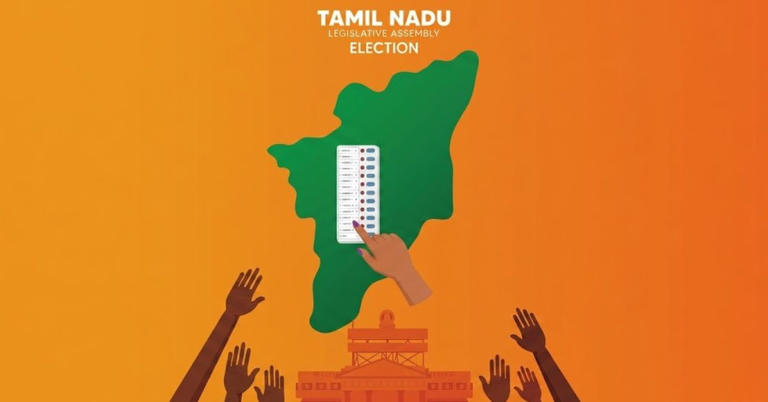

About
Elections to appoint the 234 members of the 17th Tamil Nadu Legislative Assembly, the highest body of the Government of Tamil Nadu, were held on 23 April 2026. The results were declared on 4 May 2026 by the Election Commission of India. It recorded the highest voter turnout in the state's history (85.1%). The new party Tamilaga Vettri Kazhagam (TVK), founded by Tamil actor C. Joseph Vijay, won in its first-ever election and ended a 59-year streak of dominance of Dravidian parties in the state.